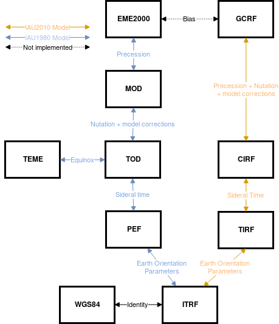

Coordinate conventions¶
Orbit conventions¶
- Orientation of the ellipse in the coordinate system:
For zero inclination \(i\): the ellipse is located in the x-y plane.
The direction of motion as True anoamly \(\\nu\): increases for a zero inclination \(i\): orbit is anti-coockwise, i.e. from +x towards +y.
If the eccentricity \(e\): is increased, the periapsis will lie in +x direction.
If the inclination \(i\): is increased, the ellipse will rotate around the x-axis, so that +y is rotated toward +z.
An increase in Longitude of ascending node \(\Omega\): corresponds to a rotation around the z-axis so that +x is rotated toward +y.
Changing argument of perihelion \(\omega\): will not change the plane of the orbit, it will rotate the orbit in the plane.
The periapsis is shifted in the direction of motion.
True anomaly measures from the +x axis, i.e \(\\nu = 0\) is located at periapsis and \(\\nu = \pi\) at apoapsis.
All anomalies and orientation angles reach between 0 and \(2\pi\)
Reference: “Orbital Motion” by A.E. Roy.
Coordinate transformation guide¶
In general there are 2 classes of coordinate systems:
Earth Centered Inertial (ECI)
Earth Centered Earth Fixed (ECEF)
There are several realizations of these classes of coordinate systems that take into account different effects and perturbations. The difference between an Inertial and an Earth Fixed frame is that in an inertial system all motion comes from classical orbit dynamics (N-body solutions) and are not caused by the coordinate frame transformation.
Reference |
Type |
Coordinate frame name |
|---|---|---|
ITRF |
ECEF |
International Terrestrial Reference Frame |
PEF |
ECEF |
Pseudo-Earth Fixed reference frame |
CIRF |
ECI |
Celestial Intermediate Reference Frame |
MOD |
ECI |
Mean-Of-Date reference frame |
TOD |
ECI |
True-Of-Data reference frame |
GCRF |
ECI |
Geocentric Celestial Reference Frame (GCRF) |
J2000 |
ECI |
J2000 reference frame (Also called EME2000) |
TEME |
ECI |
True Equator, Mean Equinox reference frame |
https://www.orekit.org/site-orekit-9.3.1/architecture/frames.html
{kind=link}

Flowchart describing the relation between different frames. Original image Copyright (c) 2018 Jules David under the MIT license. Source: beyond.¶
As an example, consider a Keplerian orbit (i.e. a point moving on a ellipse) around the Earth. An inertial frame here is any barycentric Cartesian fixed frame (barycentric can be approximated as the Earth Centric due to the small mass of the orbiting object). An example of a non-inertial frame could be a translating Cartesian frame, here the object would seem to be “spiraling” away from us. In this frame the movement away from us is not induced by fundamental orbital dynamics but due to the coordinate frame transformation. The same is true in a Earth Fixed system, the orbit would seem to rotate at the speed of the Earths rotation.
Since any barycentric Cartesian fixed frame is Inertial it is customary to choose 2 reference directions to make the frame choice unique. These reference directions are usually the rotational axis of the Earth and the Vernal Equinox, i.e. the direction in space formed by the intersection of the Earths orbital plane around the Sun and the Earth equatorial plane. The direction chosen for the +x axis is usually defined so that it is aligned with the direction when axial tilt of the Earth in +z direction (the Earth moving counter-clockwise) is moving from towards the Sun to away from the Sun. The Vernal Equinox with this definition is also the ascending node of the ecliptic on the celestial equator.
Since the orbital dynamics of the Earth in the solar-system has no analytic solutions due to perturbations, the definition of Vernal Equinox and the Earth ecliptic also changes with respect to time, thus is it customary to choose the common reference direction for the Vernal Equinox at a specific time, called the Epoch of that equinox.
From numerical simulations the drift of the Obliquity of the ecliptic (inclination of ecliptic with respect to the celestial equator) does not vary more then 1 degree on the order of 10,000 years.
Most commonly used ECI’s are:
- True Equator Mean Equinox (TEME)
This is the frame after a Two-Line Element (TLE) orbit has been converted to an Cartesian state. The Mean Equinox refers to the Vernal Equinox but averaged over time to remove nutation. The Mean Vernal Equinox here is aligned to coincide with the +x axis. Thus the instantaneous Vernal Equinox is different at any point in time and needs to be modeled. True Equator refers to the fact that the instantaneous axis of rotation of the Earth is used to align the +z axis with.
- The International Terrestrial Reference Frame (ITRF)
The ITRF contains models of movement of both the Earth and the Equinox. Thus the frame itself is a function of time. As the models are updated it is customary to denote the reference frame by a Epoch, or the time around witch they “center”.
Going from a “Mean” element definition to a Instantaneous one requires a model of nutation.
To transform from e.g. TEME to ITRF one would first need to find the difference between the instantanius mean equionox
Then find the instantanius earth rotation….
then find the rotation of the earth, also known as GMST